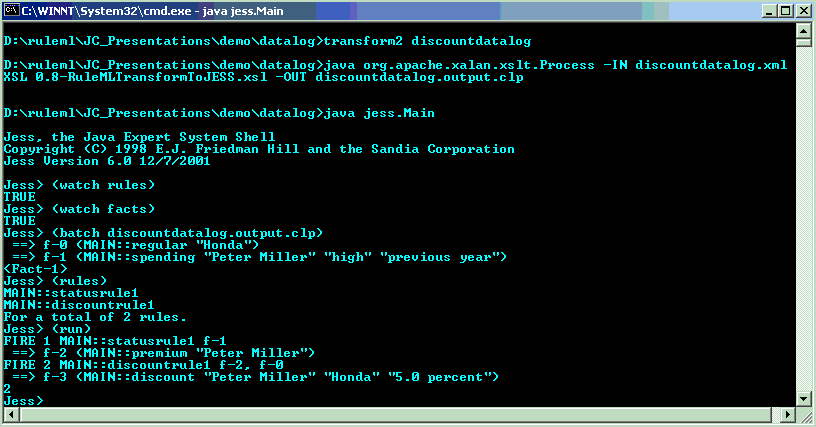

.
This document is an introduction to RuleML essentials using examples of the popular discount use case. Each rule will be shown in four different format to illustrate the various syntaxes. The business ruls are implemented in RuleML 0.8 version of both Datalog and Hornlog.
The discount rulebase defines non-prioritized business rules on customer-and-product discounting and, using chaining, on premium customers. It also gives business facts on products and on a specific customer.
These examples could be easily extended with further categories of customers, product discounting conditions, etc.
The examples given in this use case are implemented in RuleML 0.8 and validate w.r.t the Datalog and Hornlog DTDs:
http://www.ruleml.org/dtd/0.8/ruleml-datalog.dtd
http://www.ruleml.org/dtd/0.8/ruleml-hornlog.dtd
A RuleML Datalog schema is also available from the RuleML web site:
1. Introduction to the Customer Discount Use Case
2. Customer Discount in RuleML Datalog
Consider the following business rules:
RULE 1:
"The discount for a customer buying a product is 5.0 percent if the customer is premium and the product is regular"
RULE 2:
"A customer is premium if their spending has been high the previous year"
Also suppose there are some (obvious) facts.
These clauses can be transcribed into Datalog with "..." constants still containing parts of the English meanings.
Below, we will present two implementations of this scenario using RuleML Datalog and RuleML Hornlog. Discussion on possible extensions will focus only, in this use case, on URI support.
The customer discount scenario is a simple but non-trivial Datalog example - with rule chaining - and its model-theoretic semantics.
We will give 4 different formats for each rule, starting with an IF-THEN format borrowed from IBM CommonRules, followed by the RuleML encoding, and two encodings in Prolog (for backward chaining) and Jess (for forward chaining).
A running implementation in Jess will be shown (trace viewed in a command line DOS window). The source code is available by email request.
A RuleML implication rule (“imp” element in the XML syntax) expresses an if-then rule (a.k.a. a “clause” in the LP KR literature). It is a kind of statement. An implication rule is a pure-belief rule that does not directly specify any procedural attachments for sensing or effecting.
The detailed implementation in RuleML 0.8 is available here.
A premium customer buying a regular product gets a 5% discount.
IF premium(?customer)
AND regular(?product)
THEN discount(?customer, ?product, "5.0 percent");
<imp> <_rlab>discountrule1</_rlab> <_head> <atom> <_opr>discount</_opr> <var>customer</var> <var>product</var> <ind>5.0 percent</ind> </atom> </_head> <_body> <atom> <_opr>premium</_opr> <var>customer</var> </atom> <atom> <_opr>regular</_opr> <var>product</var> </atom> </_body> </imp>
discount(Customer,Product,"5.0 percent") :-
premium(Customer) , regular(Product).
(defrule discountrule1
(premium ?Customer)
(regular ?Product)
=>
(assert (discount ?Customer ?Product "5.0 percent"))
)
A customer is premium if their spending has been high the previous year.
IF spending(?customer, "High", "previous year")
THEN premium(?customer);
<imp> <_rlab>statusrule1</_rlab> <_head> <atom> <_opr>premium</_opr> <var>customer</var> </atom> </_head> <_body> <atom> <_opr>spending</_opr> <var>customer</var> <ind>"high"</ind> <ind>"previous year"</ind> </atom> </_body> </imp>
premium(Customer) :-
spending(Customer, "high", "previous year").
(defrule statusrule1
(spending ?customer "high" "previous year")
=>
(assert (premium ?customer)
)
{
discount("Peter Miller","Honda","5.0 percent"),
premium("Peter Miller"),
spending("Peter Miller","high","previous year"),
regular("Honda")
}
The screen below shows the rules execution after the fact assertion to the working memory:

Some of the "..." constants can be further formalized in Hornlog with complex terms.
Here's a simple but non-trivial Hornlog example - with rule chaining - and its model-theoretic semantics. Complex terms are presented in bold to distinguish them from relation applications in the IF-THEN SCLP encoding and in the Prolog syntax. In RuleML, these are implemented using the <cterm> element.
The detailed implementation in RuleML 0.8 is available here.
IF premium(?customer)
AND regular(?product)
THEN discount(?customer, ?product, percent(5.0));
<imp> <_rlab>discountrule1b</_rlab> <_head> <atom> <_opr>discount</_opr> <var>customer</var> <var>product</var> <cterm> <_opc>percent</_opc> <ind>5.0</ind> </cterm> </atom> </_head> <_body> <atom> <_opr>premium</_opr> <var>customer</var> </atom> <atom> <_opr>regular</_opr> <var>product</var> </atom> </_body> </imp>
discount(Customer,Product,percent(5.0)) :- premium(Customer) , regular(Product).
A customer is premium if their spending during the previous year
was at least 5000 dollars.
IF spending(?customer, atleast(dollar(5000)), "previous year")
THEN premium(?customer);
<imp> <_rlab>statusrule1b</_rlab> <_head> <atom> <_opr>premium</_opr> <var>customer</var> </atom> </_head> <_body> <atom> <_opr>spending</_opr> <var>customer</var> <cterm> <_opc>atleast</_opc> <cterm> <_opc>dollar</_opc> <ind>5000</ind> </cterm> </cterm> <ind>"previous year"</ind> </atom> </body> </imp>
premium(Customer) :- spending(Customer,atleast(dollar(5000)),"previous year").
Objects (resources) are inds (individual constants represented by the <ind> element in RuleML) using a URL/URI as their OID, as in SHOE or RDF.
In our use case, an href attribute can be defined for inds representing "Peter Miller" a customer or "Honda" a product. In RuleML hornlog, <ctor> elements can also use an href attribute.
The fact:
"Peter Miller" is a premium customer where "Peter Miller" is represented by its URI: http://customers.ebiz.com/petermiller
can be encoded as follows:
<fact>
<atom>
<_opr>premium</_opr>
<ind href="http://customers.ebiz.com/petermiller"/>
</atom>
</fact>